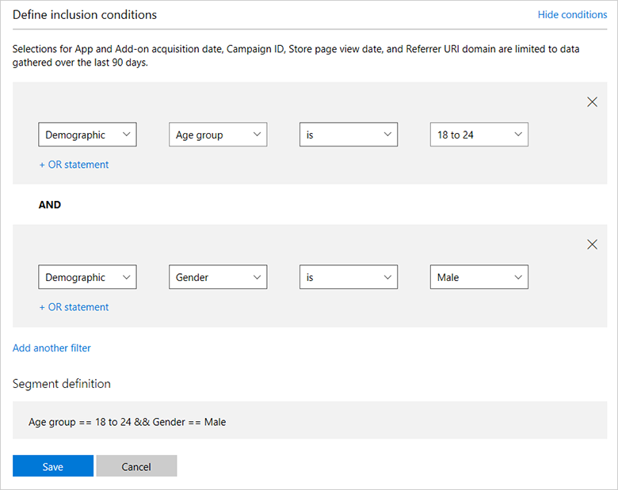

Create customer segments
There are times when you may want to target a subset of your customer base for promotional and engagement purposes. You can accomplish this in Partner Center by creating a type of customer group known as a segment that includes the Windows 10 or Windows 11 customers who meet the demographic or revenue criteria that you choose.
For example, you could create a segment that includes only customers who are age 50 or older, or that includes customers who’ve spent more than $10 in the Microsoft Store. You could also combine these criteria and create a segment that includes all customers over 50 who have spent more than $10 in the Store.
We provide a few segment templates to help get you started, but you can define and combine the criteria however you'd like.
Tip
Segments can be used to send targeted notifications or targeted offers to a group of customers as part of your engagement campaigns.
Things to keep in mind about customer segments:
- After you save a segment, it takes 24 hours before you’ll be able to use it for targeted push notifications.
- Segment results are refreshed daily, so you may see the total count of customers in a segment change from day to day as customers drop in or out of the segment criteria.
- Most segment attributes are calculated using all historical data, although there are some exceptions. For example, App acquisition date, Campaign ID, Store page view date, and Referrer URI domain are limited to the last 90 days of data.
- Segments only include customers who acquired your app on Windows 10 or Windows 11 while signed in with a valid Microsoft account.
- Segments do not include any customers who are younger than 17 years old.
To create a customer segment
- In Partner Center, expand Engage in the left navigation menu and then select Customer groups.
- On the Customer groups page, do one of the following:
- In the My customer groups section, select Create new group to define a segment from scratch. On the next page, select the Segment radio button.
- In the Segment templates section, select Copy next to one of the predefined segments (that you can use as is or modify to suit your needs).
In the Group name box, enter a name for your segment.
In the Include customers from this app list, select one of your apps to target.
In the Define inclusion conditions section, specify the filter criteria for the segment.
You can choose from a variety of filter criteria, including Acquisitions, Acquisition source, Demographic, Rating, Churn prediction, Store purchases, Store acquisitions, and Store spend.
For example, if you wanted to create a segment that only included your app customers who are 18- to 24-years old, you’d select the filter criteria [Demographic] [Age group] [is] [18 to 24] from the drop-down lists.
You can build more complex segments by using AND/OR queries to include or exclude customers based on various attributes. To add an OR query, select + OR statement. To add an ADD query, select Add another filter.
So, if you wanted to refine that segment to only include male customers who are in the specified age range, you would select Add another filter and then select the additional filter criteria [Demographic] [Gender] [is] [Male]. For this example, the Segment definition would display Age group == 18 to 24 && Gender == Male.

Select Save.
Important
You won't be able to use a segment that includes too few customers. If your segment definition does not include enough customers, you can adjust the segment criteria, or try again later, when your app may have acquired more customers that meet your segment criteria.
App statistics
The App statistics section on the segment provides some info about your app, as well as the size of the segment you just created.
Note that Available app customers does not reflect the actual number of customers who have acquired your app, but only the number of customers that are available to be included in segments (that is, customers that we can determine meet age requirements, have acquired your app on Windows 10 or Windows 11, and who are associated with a valid Microsoft account).
If you view the results and Customers in this segment says Small, the segment doesn't include enough customers and the segment is marked as inactive. Inactive segments can't be used for notifications or other features. You might be able to activate and use a segment by doing one of the following:
- In the Define inclusion conditions section, adjust the filter criteria so the segment includes more customers.
- On the Customer groups page, in the Inactive segments section, select Refresh to see if the segment now contains enough customers (for example, if more customers who meet your segment criteria have downloaded your app since you first created the segment, or if more existing customers now meet your segment criteria).